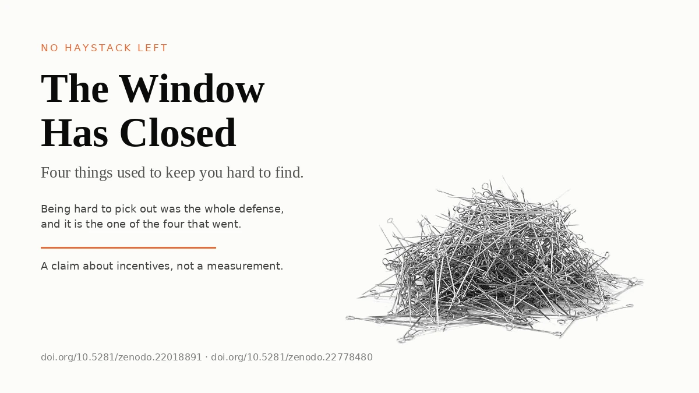
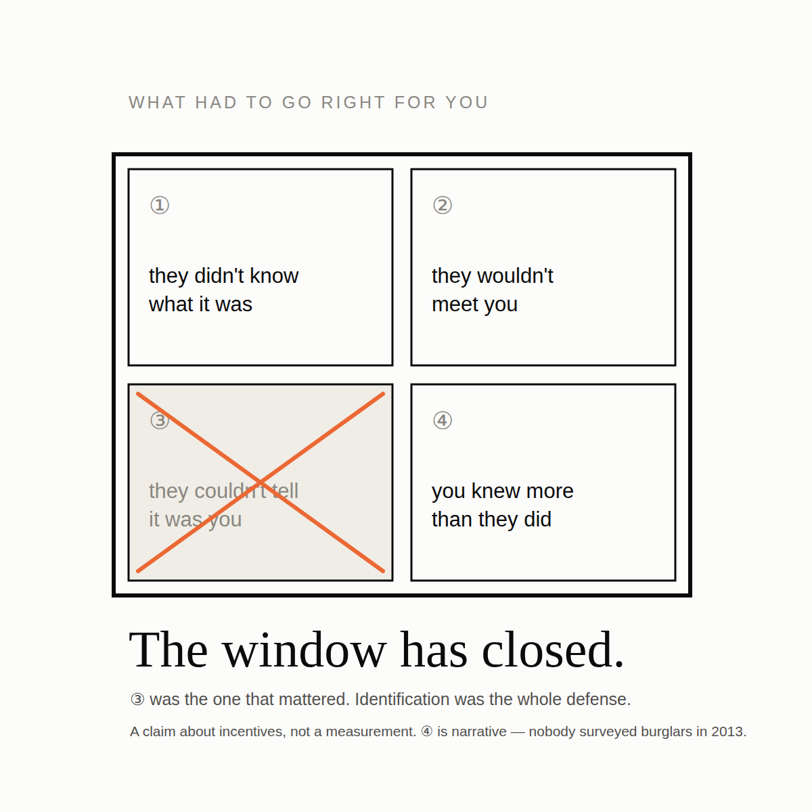
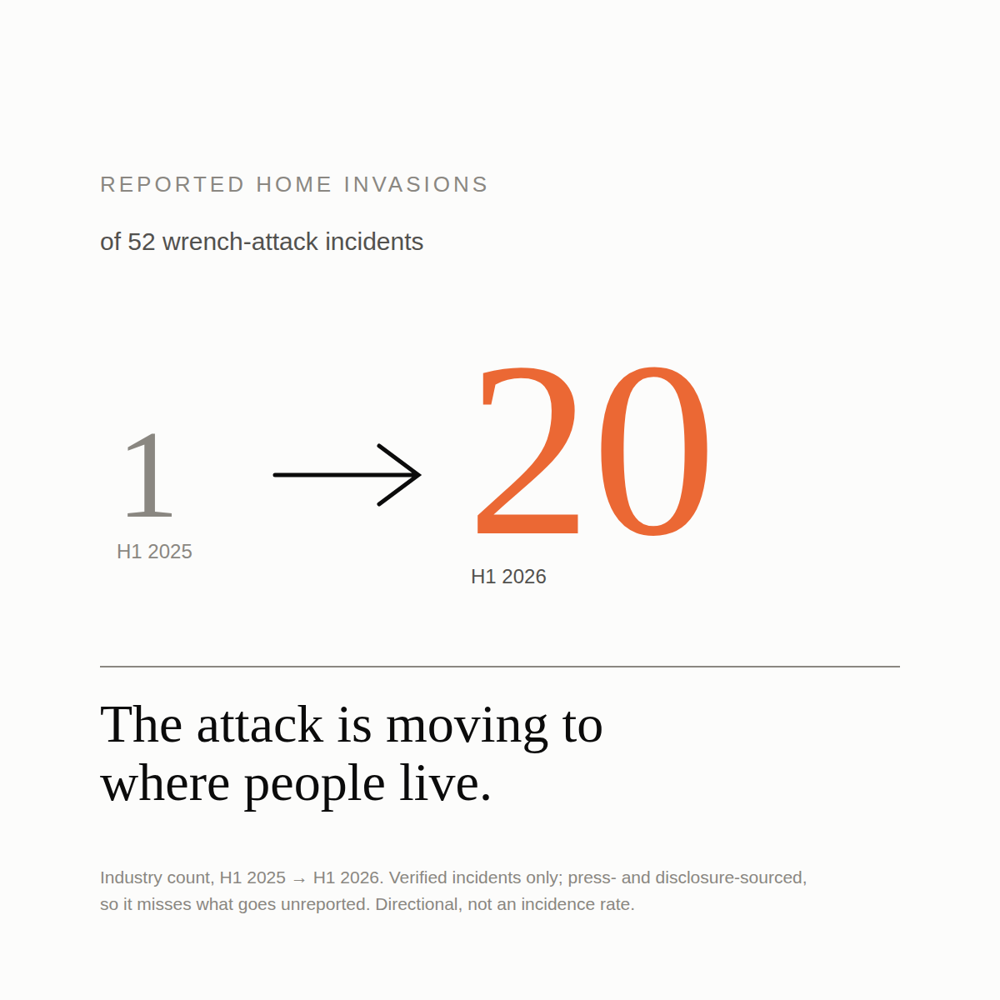
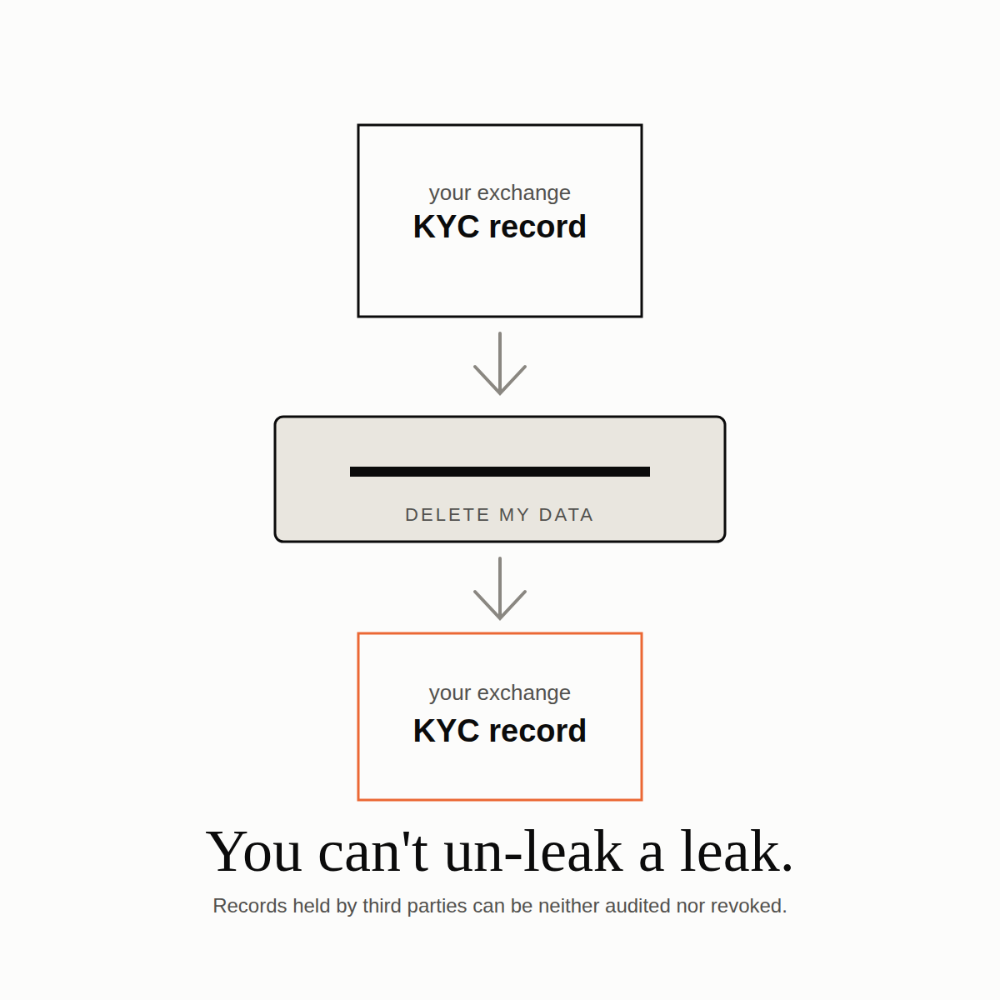
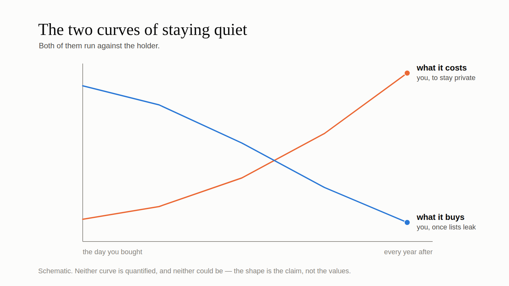

Four things used to be true about getting robbed for your bitcoin. None of them are true anymore, and none of them are coming back. Almost all of the advice bitcoin holders are given about protecting themselves was calibrated for the world in which they were true.

There was once a time
Think about what had to go right for you, back then, for a wrench attack not to happen.
Most thieves had no idea what bitcoin was. Not "underestimated it": had never heard the word. The set of criminals who could even form the intention to rob you of a private key was vanishingly small.
The few who did know were unlikely ever to meet you, because there were not many bitcoin holders about. Running into one by chance, in the course of an ordinary burglary, was a coincidence that mostly did not happen.
Then there is the condition people forget, which is that they had to know it was you. Meeting a holder is not the same as identifying one, and without some way of telling holders from everybody else, knowing what bitcoin is buys a thief nothing at all. It is a capability with no targeting.
And if those three failed and somebody did come for you, the odds were that you knew more than he did. The early holder was typically a cypherpunk or a cryptographer, somebody who had read the mailing list, and the attacker was typically an amateur working off a plan he had improvised that week. The technical asymmetry tended to run in the victim's favor.
That was a real window and it was genuinely quite safe in there.
What bitcoin holders face instead
The first two need no arguing over. Everybody knows what bitcoin is, and bitcoin holders are now numerous.
The third is the one that actually changed the game, and it gets a section of its own below.
The fourth has flipped outright. Whoever is doing this is not improvising: French prosecutors have charged 88 people across a dozen linked kidnapping and extortion cases, which is not a run of opportunists but organizations, with reconnaissance, division of labor and repeat business. The holder they come for, meanwhile, is now statistically a normal person who bought some bitcoin on an app. The cryptographer-versus-amateur matchup has become something close to its opposite.
The shape of the attacks shows the same shift. In one industry count of the first half of 2026, reported home invasions went from 1 to 20 out of 52 incidents year on year. The attack is moving to where people live, which is not the profile of a crime of opportunity.

On counts generally: there are several available series for how many of these happen per year, they disagree with each other about the exact numbers, and they agree completely about the direction, which is a handful a year before 2017 and dozens a year now. I would rather tell you that than pick whichever number is most alarming and present it as settled. The registries are built from press reports, so they miss everything unreported and over-represent whatever made the news.
The target list is public now
To target you specifically a thief needs a list, and this is the condition whose loss closed the window for good. For most of bitcoin's history there was no list. Now there are many, and you did not consent to a single one of them.
Threat-intelligence reporting on the 2026 wave attributes victim selection to leaked databases, tax records and exchange data, plus insider sales of customer lists and dark-web recruitment of employees with database access. Chain analysis sits on top of that, and a decade of people talking publicly about their holdings sits on top of that.
What those have in common is that they are records held by third parties, which you can neither audit nor revoke. You cannot un-create a record. You cannot un-leak a leak. Whatever the exchange knows about you it knows permanently, and so does anyone who ever obtains what the exchange knows.

Which means discretion has a very unusual cost curve, and both halves of it run against you. The price of staying private compounds with every year you hold and every counterparty you deal with. The benefit shrinks as the pile of already-leaked records grows, because your discretion is only worth something if nobody else has already published you. You are paying more, every year, for something worth less, every year.

And if you are tax-compliant the strategy is not even available to you. Where holdings or gains are reportable, "leave no record" is not discretion, it is a crime. So honest bitcoin holders are told to hide by people who have not noticed that hiding is something the law does not permit them to do.
I have a whole post coming about the French tax-administration case that puts this beyond argument. For now: the list exists, you are on it, and you were never asked.
What kind of claim this is
A fair question at this point is: how would you know if this were wrong?
You wouldn't, and I want to be straight about that rather than dress it up.
This is not a prediction you could falsify by counting. It is a claim about structure, about what people with these incentives, facing these constraints, do. The cases and the counts in this post are illustrations of the structure, not evidence for it. If the registry showed half as many attacks next year, not one sentence above would become false; the incentives would be exactly what they are now.
That sounds like a weakness. There is a longer argument that it is not, and a much more uncomfortable argument about why, in this particular field, the evidence that would settle things is systematically unavailable. Both are coming in a later post. For now I will just flag it, because an argument that quietly relies on data it cannot produce is doing something dishonest, and I would rather say the thing out loud.
The advice was inherited, not derived
The standing advice, which is to hold quietly, deny it if asked, and keep a small wallet to hand over, is perfectly sensible advice for the world of those four conditions. Where almost nobody is looking for you and nobody can pick you out of a crowd, staying quiet is close to a complete defense, because the attack mostly never starts.
It was never derived from a threat model, though. It was inherited from a period, and the period ended.
Once the window closes it turns into two separate problems. One is that it stopped being a mechanism: a defense whose whole strength is that the attacker does not know something is not a defense once he knows, and in security engineering that has a name, a catalog entry and universal agreement that it is a design defect, right up until the asset in question happens to be bitcoin. That is the next post but one.
The other is worse, and it is why I ended up writing papers about this rather than a checklist. Under the conditions we actually live in now, that advice does not merely stop protecting people. It makes their situation worse, during an attack and after one, and not only for the person who took it. That takes more room than a blog post, and it is where the real argument is.
There is no version of this where the window reopens. All four conditions are gone in a direction that does not reverse: knowledge does not un-spread, bitcoin holders do not become rare again, leaked lists do not unleak, and organized crime does not forget a working business model.
The good news, such as it is, is that a defense that never depended on the attacker's ignorance doesn't care about any of this. Building one turns out to be possible. It just isn't what anybody is currently telling you to do.
The full arguments are in two open-access papers: The Deadly Race — what follows from the fact that you cannot prove you forgot something; and The Denial Spiral — why advice to conceal and deny gets worse for everyone the more people take it. Both are free, neither is behind a signup.
Incident data in this post comes from Jameson Lopp's public registry of physical attacks, which is a press-sourced sample: it misses everything unreported and over-represents whatever made the news. New cases I find go upstream to that registry rather than into any database of mine, because that information belongs to everyone, including whoever is next.
If this was worth your time. Send it to someone still running the old advice. That does more than anything else here. A ⭐ on Great Wall, the research or these posts costs you nothing and makes the work easier to find. And if you want to fund it, support takes ⚡ Lightning and on-chain, with no signup, no tiers, and nothing expected in return.